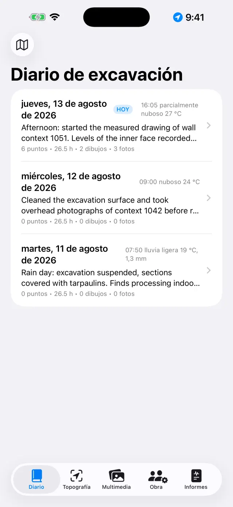
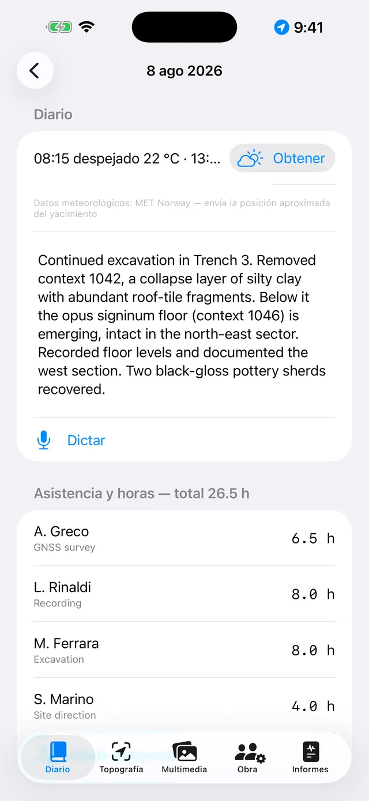
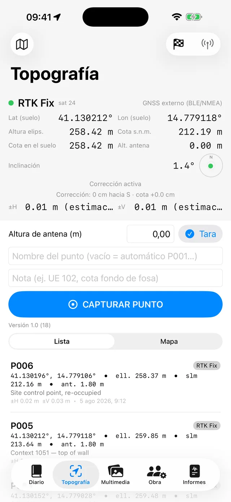
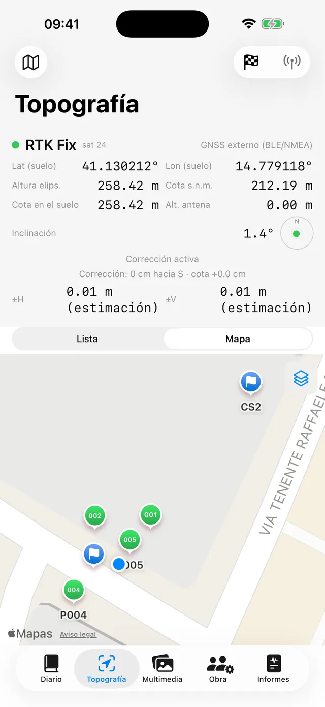
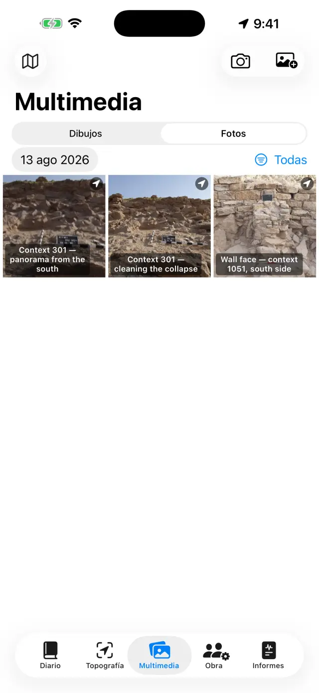
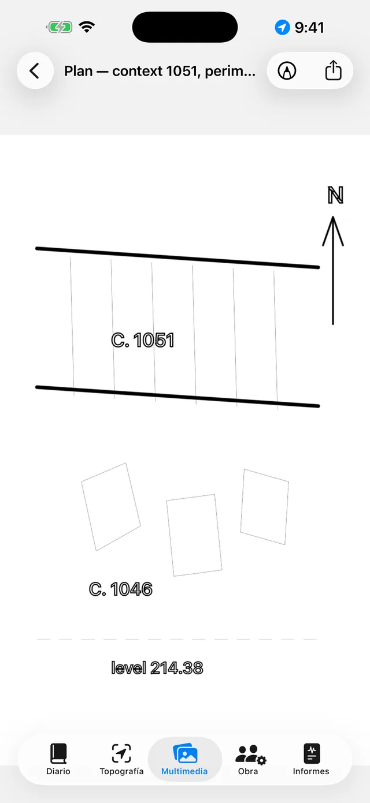
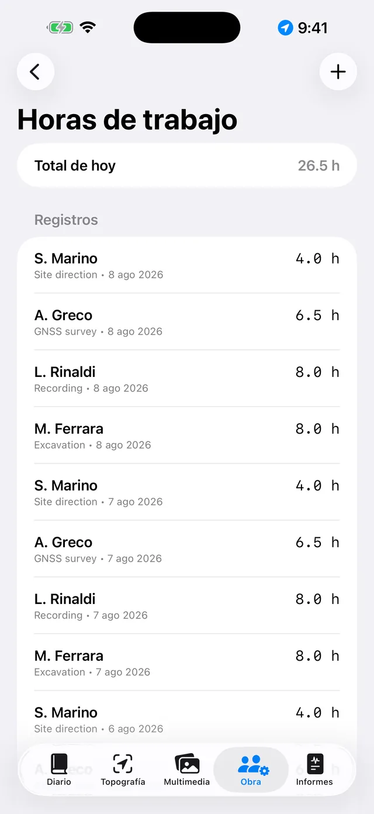
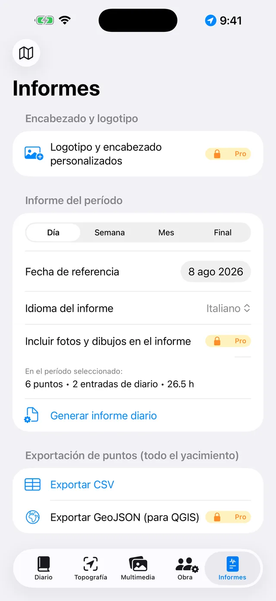

El diario de excavación digital para iPhone y iPad. 100 % sin conexión: tus datos se quedan en el dispositivo.
En dos palabras
Todo gira en torno a una idea: cada jornada de excavación es una
página que se rellena sola. Tú registras las cosas donde corresponde —
un punto GNSS en Topografía, una foto en Multimedia, las horas en la Obra — y
la página del día en el Diario lo recoge todo automáticamente. Al
final de la semana o de la excavación, los informes se generan solos a partir
de las páginas.
Una jornada típica
MañanaAbre la página del día, anota el tiempo y el diario (o dictalo con Dictar)
EquipoEn la Obra, registra quién está y sus horas
TopografíaCaptura puntos GNSS; comprueba una base antes si usas RTK
FotosDispara desde Multimedia: las coordenadas se añaden solas
DibujosCalca la sección o la planta sobre una foto (papel vegetal digital)
TardeDesde Informes, genera el diario: un PDF listo para enviar
Primeros pasos
Al abrir la app por primera vez encontrarás un yacimiento de ejemplo. Para
crear el tuyo, toca el nombre del yacimiento arriba (icono 🗺) →
Nuevo yacimiento… y ponle nombre (p. ej. «Colle Sant'Angelo —
Sondeo 3»).
El nombre del yacimiento activo está siempre visible arriba: todas las
pestañas muestran sus datos. Para cambiar de yacimiento, vuelve a tocar el
nombre.
Concede los permisos cuando se pidan: ubicación (para los puntos),
cámara (para las fotos), micrófono (para el dictado),
Bluetooth (solo si usas un receptor externo).
Las cinco pestañas
📓 Diario
Toca una jornada para abrir su página: diario, tiempo, equipo, puntos,
fotos y dibujos del día ya están allí.
Escribe el diario o toca Dictar y habla: la transcripción se
hace en el dispositivo y funciona sin red.
El meteo se escribe a mano (p. ej. «Despejado, 28 °C, viento flojo») o se
obtiene con Obtener, que pide las condiciones del momento al servicio
meteorológico noruego. Hace falta red y solo funciona en el día de hoy: el
tiempo de ayer ya no se puede recuperar. Un segundo toque por la tarde añade
otra medida. Lo que escribes a mano siempre gana.
Al obtenerlo, del dispositivo solo sale la posición de la zona redondeada a
unos 11 metros, y en los informes la línea aparece en el idioma del informe.

La lista de jornadas

La página de una jornada
📍 Topografía
El panel superior muestra la posición en vivo: coordenadas, cotas,
precisión y tipo de fix (GPS / RTK Float / RTK Fix).
Si usas jalón, ajusta la Altura de antena (m): la cota del punto
se reduce al suelo automáticamente.
Toca Capturar punto. Los nombres son correlativos (P001,
P002…), pero puedes escribir el tuyo (p. ej. «UE 102 — fondo de fosa») y
añadir una nota.
Cambia entre Lista y Mapa para ver los puntos sobre
el terreno; desde el mapa puedes activar el catastro u otro servicio WMS.
Las bases de replanteo (🏁) tienen su propia sección: impórtalas de CSV o
créalas, y usa la comprobación para vigilar los residuos ΔN/ΔE/ΔZ en vivo
antes de medir.

El panel GNSS de Topografía

Puntos y bases en el mapa
Cada punto guarda las dos cotas: elipsoidal y
ortométrica (s. n. m.). Con el GPS interno del teléfono la cota ortométrica
puede no estar disponible: hace falta un receptor externo (ver más abajo).
📷 Multimedia
Dispara con el botón de cámara o importa del carrete.
Las fotos se numeran solas (F001, F002…) y se georreferencian con la última
posición GNSS disponible.
Toca una foto para ponerle título y notas (p. ej. «UE 102 desde el
norte»).

La galería de fotos
✏️ Dibujos (en Multimedia)
Crea una lámina nueva y elige una foto del yacimiento como fondo: es tu
papel vegetal digital.
Calca estratos, cortes y piedras con el dedo o el Apple Pencil; regula la
opacidad de la foto para ver mejor el trazo.
Añade cuadros de texto para las etiquetas (p. ej. «UE 1002») y la flecha
del norte.
Al terminar, oculta la foto: queda el dibujo limpio, listo para el
informe.

El papel vegetal digital
👷 Obra
Registra la asistencia del día: nombre, tarea y horas de cada persona.
Lleva el inventario del equipamiento y a quién está asignado.

Equipo y horas
📄 Informes
Elige el tipo: diario (gratis, con marca de agua),
semanal, mensual o final
con apéndices completos PRO.
Elige el idioma del informe — español, italiano, inglés, alemán o árabe —
independiente del idioma de la app.
Genera el PDF, o exporta DOCX con logotipo y fotos
PRO, CSV de los puntos, GeoJSON para QGIS
PRO.

Generación de informes
Receptor GNSS externo y NTRIP
Con un receptor externo (antena centimétrica) la app alcanza precisión RTK.
El GPS interno queda siempre disponible como respaldo.
Enciende el receptor y activa el Bluetooth del teléfono.
En Topografía elige la fuente de posición: GNSS externo
(BLE/NMEA)PRO y selecciona tu receptor en la
lista. También se admiten receptores MFi (gratis) y receptores que emiten NMEA
por red.
Para las correcciones RTK configura el NTRIP: dirección
del caster, puerto, mountpoint, usuario y contraseña (se guardan en el llavero
del dispositivo). La app envía tu posición al caster y recibe las
correcciones.
Espera al RTK Fix: precisión centimétrica. Comprueba una
base antes de empezar.
Copia de seguridad e intercambio
En el menú del yacimiento toca Exportar yacimiento (.zip):
dentro va todo — diario, puntos, fotos, dibujos, horas, bases.
Guarda el ZIP donde quieras (Archivos, Drive, correo…). Es tu copia de
seguridad: la app no tiene nube, por diseño.
Importar yacimiento (.zip)… recrea el yacimiento en otro
dispositivo, incluso entre iPhone y Android.
⚠️ Eliminar yacimiento… borra el yacimiento con todo
su contenido y es irreversible: si dudas, exporta antes un
ZIP.
Gratis y Pro
Gratis
Pro
Yacimientos
1
Ilimitados
GNSS
GPS interno, receptores MFi
+ BLE/NMEA, NTRIP
Informes
Diario con marca de agua
Todos, sin marca de agua
Exportación
PDF, CSV
+ DOCX con logotipo y fotos, GeoJSON
Dictado por voz
✓
✓
Idiomas de informe
5
5
Pro es una suscripción mensual o anual con renovación automática, o una
compra única de por vida. Se gestiona y cancela en los ajustes de la cuenta de
Apple.
Solución de problemas
El receptor Bluetooth no aparece o no se conecta
Comprueba, por orden:
el receptor está encendido y no está ya conectado a otra app u otro
teléfono;
el Bluetooth del sistema está activo y la app tiene el permiso
(Ajustes → Giornale di Scavo);
la fuente elegida en Topografía es GNSS externo (BLE/NMEA);
apaga y enciende el receptor y busca de nuevo.
Nunca llego al RTK Fix
Hace falta una conexión NTRIP activa: revisa caster, mountpoint y
credenciales.
Revisa la cobertura de datos del teléfono: las correcciones llegan por
internet.
Importa el cielo abierto: árboles densos y muros cercanos degradan la
señal. Con malas condiciones puedes quedarte en RTK Float (decimétrico).
Elige un mountpoint cercano (< 30–40 km) o una red VRS.
NTRIP no se conecta
Verifica dirección y puerto (a menudo 2101) y que el mountpoint exista: la
mayoría de los casters publican la lista (sourcetable).
Usuario o contraseña incorrectos dan error 401/403: revisa las
credenciales.
Algunas redes exigen tu posición (GGA): la app la envía sola, pero el
receptor necesita antes un primer fix.
La cota s. n. m. está vacía o a cero
El GPS del teléfono solo da la altura elipsoidal. La cota ortométrica
(s. n. m.) viene de la sentencia GGA de un receptor externo. Sin receptor, los
puntos guardan igualmente la elipsoidal.
El dictado no funciona
Revisa los permisos de micrófono y reconocimiento de voz en Ajustes.
La transcripción es en el dispositivo: la primera vez el sistema puede
descargar el modelo del idioma (red una sola vez; después funciona sin
conexión).
Habla con frases cortas; el texto se añade al final del diario.
El mapa catastral (WMS) no se ve
La app funciona sin conexión, pero las capas WMS son servicios web: hace
falta conexión y un servicio operativo. El catastro español se configura con el
endpoint WMS nacional (debe admitir EPSG:3857), por ejemplo
ovc.catastro.meh.es. Sin cobertura, el mapa base y tus puntos
siguen visibles.
Las fotos no tienen coordenadas
La foto toma la posición del último fix GNSS: abre antes Topografía y espera
posición; después dispara. Si el permiso de ubicación está denegado, las fotos
se guardan sin coordenadas.
En el informe faltan fotos o el logotipo
Las fotos en los informes, el logotipo y el encabezado personalizado son de
Pro y valen para DOCX y PDF. El informe diario gratuito lleva marca de agua y
no incluye fotos.
He borrado un yacimiento por error
El borrado es definitivo: los datos no se pueden recuperar (no hay nube).
Si exportaste antes un ZIP, impórtalo para restaurar el yacimiento a esa
fecha. Consejo: exporta un ZIP al final de cada jornada.
He comprado Pro pero sigue bloqueado
Toca Restaurar compras en la pantalla Pro, con la misma cuenta de
Apple de la compra. Si cambiaste de dispositivo, la restauración recupera la
suscripción o la licencia de por vida.
«Obtener» está apagado, o dice «Meteo no disponible»
si el botón está apagado estás en la página de un día pasado: el meteo solo
se obtiene en el día de hoy;
si aparece «Meteo no disponible» falta la red, o el yacimiento aún no tiene
un punto GNSS del que tomar la posición — toma un punto y vuelve a intentarlo.